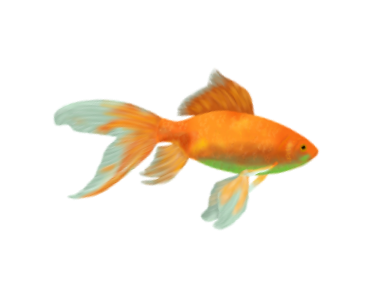

Os peixes ornamentais são uma das espécies mais populares em aquários e lagos artificiais ou naturais. Criados como pets, muitos deles são coloridos artificialmente, enquanto outros possuem cores naturais, mas igualmente bonitas e únicas.
Algumas espécies são mais comuns de serem encontradas como peixes ornamentais, como os bettas, molinésias e guppys. Alguns peixes ornamentais são mais frágeis, enquanto outros são mais resistentes.
De qualquer forma, é importante criar uma rotina de cuidados para manter os peixinhos saudáveis e felizes, preservando sua beleza natural. Antes de tudo, é necessário ajustar vários parâmetros para criar um ambiente controlado e ideal para o seu peixe, criando um verdadeiro ecossistema.
Antes de inserir os peixes, o ideal é montar o aquário e deixá-lo em média 30 dias para que a biologia do aquário comece a se formar e evitar perdas de peixes. Se possível, adicione plantas aquáticas naturais, que trazem muitos benefícios e deixam o ambiente mais natural, além de ajudar a controlar todo o ecossistema.
Com essas dicas, você pode criar um ambiente saudável e bonito para seus peixes ornamentais, garantindo seu bem-estar e apreciando sua beleza natural

O PH ou Potencial Hidrogeniônico é uma escala usada para indicar a
acidez ou alcalinidade de um meio e varia de 0 a 14. Um pH 7 é o que
chamamos de neutro, enquanto valores acima de 7 são considerados
alcalinos e abaixo de 7 são ácidos.
E cada peixe tem sua faixa ideal de PH e bom antes de colocar peixes
no aquario sabe o ph para melhorar a vida do mesmo e evitar doenças.
a agua que sai da torneira é alcalina e para acidificar a agua
podemos utiliza plantas naturais aquaticos
A amônia é resultado da digestão dos peixes, alimentação demasiada ou decomposição de algum animal morto ou plantas. Sendo muito tóxica para os peixes em nivel alto
O Nitrito é o resultado da oxidação da amônia pelas bactérias nitrificantes e é o antecessor do nitrato. O nitrito é menos tóxico que a amônia, mas não deixa de ser tóxico
Se você é novo em manter aquários, pode ser um desafio escolher quais peixes colocar em seu tanque. A escolha de peixes iniciantes é importante, pois você precisa de peixes que possam sobreviver em um ambiente fechado e que sejam fáceis de cuidar.
O guppy é uma das escolhas mais populares para iniciantes. Eles são fáceis de cuidar, comem quase qualquer coisa e são muito ativos no tanque. Eles são resistentes e se adaptam bem a diferentes condições de água.
O molly é outro peixe popular para iniciantes. Eles são resistentes e adaptáveis a diferentes condições de água. Eles são herbívoros, então certifique-se de incluir algas e vegetais em sua dieta.
O platy é um peixe pequeno e colorido que é fácil de cuidar. Eles são resistentes e podem sobreviver em uma ampla faixa de temperatura e pH da água. Eles são onívoros, comem quase qualquer coisa.
O tetra neon é um peixe pequeno e colorido que é popular por sua beleza e facilidade de cuidado. Eles são resistentes e se dão bem com outros peixes pacíficos. Eles são onívoros, mas preferem alimentos vivos ou congelados.
O Ancistrus, também conhecido como peixe cascudo, é uma escolha popular para aquários iniciantes. Eles são resistentes e comem algas, o que ajuda a manter seu tanque limpo. Eles preferem um ambiente aquático mais fresco e precisam de lugares para se esconder no tanque.
Esses são apenas alguns dos muitos peixes que são adequados para iniciantes. Lembre-se de fazer pesquisas adicionais e escolher peixes que sejam compatíveis com as condições do seu tanque e uns com os outros. Boa sorte e divirta-se com seu novo hobby de aquarismo!